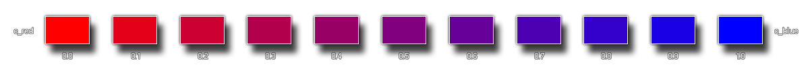

merge_colour(col1, col2, amount);
| Streit | Beschreibung |
|---|---|
| col1 | Die erste Farbe, die zusammengeführt werden soll |
| col2 | Die zweite Farbe, die zusammengeführt werden soll |
| amount | Wie viel von jeder Farbe sollte zusammengeführt werden. Zum Beispiel gibt 0 col1 zurück, 1 gibt col2 zurück, und 0.5 würde eine Zusammenführung beider Farben gleich zurückgeben |
Rückgabewert: Wert
Mit dieser Funktion können Sie zwei Farben nehmen und sie dann zusammenführen, um eine neue Farbe zu erstellen. Die Menge jeder Komponentenfarbe kann durch Ändern des Arguments "Menge" definiert werden, wobei ein Wert von 0 die erste Farbe (col1) zurückgibt, ein Wert von 1 die zweite Farbe (col2) und einen Wert dazwischen zurückgibt gibt den entsprechenden Mix zurück. Zum Beispiel wird ein Wert von 0,5 die zwei Farben gleichmäßig mischen. Das folgende Bild zeigt, wie dies funktioniert, indem die Farben Rot und Blau zusammengeführt werden: 
col = merge_colour(c_lime, c_orange, 0.5);
Der obige Code verwendet die Funktion, um eine Farbe zu erzeugen, indem Kalk und Orange 50/50 zusammengeführt werden, und speichert dann ihren Wert in der Variablen "col" für die spätere Verwendung.